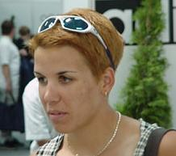

Viski Erzsébet |
|||||||||
|---|---|---|---|---|---|---|---|---|---|
|
A Tiszaújvárosi Sport Egyesület sportolója kilenc évesen kezdett kajakozni. Kétszeres Ifjúsági Európai Bajnok. Tagja volt a szegedi és milánói VB-n összesen három aranyérmet szerző kajak négyesnek. a zágrábi EB-n a négyessel aranyérmet nyert 500 méteren, 200 méteren pedig a négyessel és kettesben is ezüstérmes lett. Kedvenc időtöltése az olvasás a filmek a zene és a kutyák. |
 | ||||||||